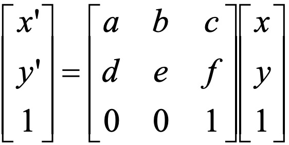
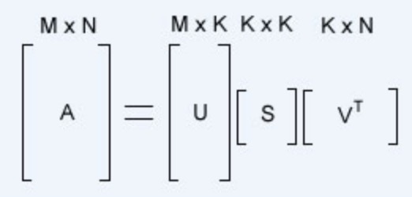
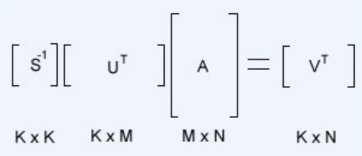
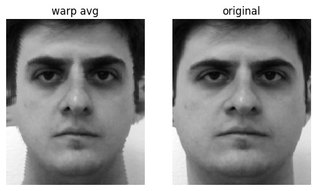
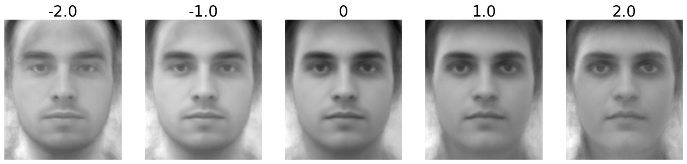
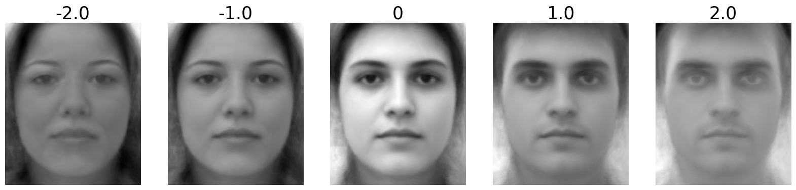

Computing Mid-Way Face
Method & Explanations
Given two images and points of correspondence, the following overall steps are performed to obtain image morphing by a certain warp fraction WF
and dissolve fraction DF from 0 to 1 (in the case of mid-face which is morphing by half, WF = DF = 0.5)
For input image pair (A, B), points of correspondence (P1, P2), and fractions (WF, DF):
→ Step 1: Perform Delaunay triangulation over shape PM = P1 * (1 - WF) + P2 * WF to obtain triangulation T.
→ Step 2: Obtain 3 sets of triangulations TA, TB, TM from T by plugging respective points P1, P2, PM as vertices.
→ Step 3: Warping - For each triangle in TA and TB, perform inverse Affine transformation with corresponding triangle in TM to obtain warped images WA and WB.
→ Step 4: Cross Dissolve using formula WA * (1 - DF) + WB * DF to obtain final output.
Inverse Affine Transformation: The main step of image warping process. The Affine transformation matrix from one triangle to another can be solved
as solution to a linear equation using numpy.linalg.lstsq function. Specifically, given vertices (x1,y1), (x2,y2), (x3,y3) of the source triangle, and
vertices (x1',y1'), (x2',y2'), (x3',y3') of the destination triangle, can solve for (a, b, c, d, e, f) to obtain the corresponding Affine transformation matrix
based on the following equation:

The transformation is performed as inverse by having source triangles from TM and destination triangles from TA and TB, even though the actual
warping is from images A, B to the mean shape. The overall idea is that for each pixel p' in the destination triangle, the inverse affine transformation is performed to
obtain a corresponding pixel p in the source triangle where its value (RGB) is copied into pixel p'.
This is to ensure that all pixels p' in the destination morphed image are assigned a value to prevent holes.
Since affine transformation may result in pixel p' that is not integer, bilinear intepolation is used to ensure a valid p for each p'.
Additionally, the function skimage.draw.polygon is convenient for obtaining list of all pixel coordiantes within any trianular region given the coordinates of the vertices.
Results
Bells & Whistles 3: Caricatures with PCA (FEI Dataset)
Method & Explanations
The goal is to analyze the FEI dataset from the eigenspace using PCA and transform images to create caricatures by adjusting color and shape coordinates in eigenspace.
The overall steps performed are as follows:
For all input images and points of correspondence from FEI dataset (neutral expression):
→ Step 1: Compute the mean shape and warp all images into the mean shape.
→ Step 2: Compute color eigenspace with PCA, obtain "eigenfaces".
→ Step 3: Use top K eigenfaces as basis for the color eigenspace (dimension reduction), obtain transformation functions between images and coordinates in color eigenspace of dimension K.
→ Step 4: Compute shape eigenspace with PCA, obtain "eigenshapes".
→ Step 5: Use top K eigenshapes as basis for the shape eigenspace (dimension reduction), obtain transformation functions between image shapes and coordiantes in shape eigenspace of dimension K.
→ Step 6: Combine color and shape eigenspaces to obtain the full eigenspace, and transformation functions between images and coordinate in eigenspace of dimension 2 * K.
→ Step 7: For any image, simply modify the eigen coordinate to produce caricatures.
Computing Eigenspace with PCA: Given M by N matrix A from N = 200 images in dataset, where each image of size (300, 250) is flattened into 1D array of size M = 75000.
PCA is performed using Singular Value Decomposition on centered images (subtract mean image from each image), specifically the numpy.linalg.svd function to compute U, S, and Vt, as shown by the following equation:

The original shape of U from SVD function is M by N, and each column of U is a "eigenface" for a total of N = 200 eigenfaces with same size as original flattened images of M = 75000.
This allows the eigenfaces to be displayed like regular images, each representing unique color characteristics within the population.
The weight or importance of each eigenface is determined by its corresponding eigenvalue in S, with higher eigenvalue meaning greater importance.
After picking top K eigenfaces, the resulting U would be M by K. Each column of Vt is the corresponding coordinate of dimension K in color eigenspace for each of the top K eigenfaces.
For color eigenspace, all images are first warped to mean shape to help with alignment of colors to more accurately pick up shared color characteristics between images.
For shape eigenspace, the points of correspondences are directly used for PCA.
Transforming from Eigenspaces to Image (Reconstruction): The goal is that given a eigen coordiate (dimension K) in eigenspace, obtain its original values related to the image.
For color eigenspace, the output would be image of mean shape and certain coloring.
For shape eigenspace, the output would be points denoting certain shape. This can be simply achieved with the same equation above for SVD, where in this case the values for U, S, and Vt is known
and we are solving for A. In this case, N = 1, so Vt contains exactly one eigen coordinate, which outputs exactly one flattened image of size M = 75000.
Transforming from Image to Eigenspaces: The goal is that given an image or a shape (as points of correspondence), obtain its eigen coordinate (dimension K) in the eigenspace.
The equation for this transformation is simply the inverse of the previous equation as shown below:

Since we know S, U, and A, we can solve for Vt which is the coordinate in eigenspace. Again, N = 1 in this case, so outputs exactly one coordinate of size K.
Eigen Coordinates: Since PCA is performed on centered images, the origin or coordinate with all zeros would be the mean image.
The origin of color eigenspace is exactly the population mean image since all images are first warped to mean shape, and the color is also average color.
The origin of shape eigenspace translates directly to points denoting the mean shape.
So overall eigen coordinate represents the distance from the mean, with bigger coordinate value means further from the mean.
The color and shape eigen coordinates can be adjusted separately to adjust the image's similarity to the mean in terms of color or shape.
Results
All the following results are demonstrated on the first image from FEI dataset as shown below together with its warped to mean shape:

The warped image is intentionally placed on the left for ease of comparison with the results shown below, since it's already at mean shape with shape eigen coordinate at 0.
The original image would be a certain distance away from mean shape, which would be captured by its shape eigen coordinate.
Color Eigenspace: Eigenfaces (K = 16)
The top 16 eigenfaces are shown below with their eigenvalues.
Color Eigenspace: Axis (K = 16)
The following shows the effect of different color eigen coordinates. After the color eigen coordinate is computed for image, it is multiplied by
different alpha values in range [-2, 2]. For alpha = 0, the resulting color is identical to population mean. For alpha = 1, the color is the reconstruction
of the original image. Overall, as the coordinate goes farther from 0, the color is farther from the mean color.
Color Eigenspace: Selected Axis (K = 16)
Instead of scaling the entire K dimensional color eigen coordinate by alpha, we can also only select particular axis to scale instead.
An interesting outcome is shown below where only odd axis (1, 3, 5, 7, 9, 11, 13, 15) or only even axis (0, 2, 4, 6, 8, 10, 12, 14) are scaled by alpha,
and the resulting color looks more masculine for odd axis and feminine for even axis.
Odd Axis Scaled by Alpha

Even Axis Scaled by Alpha

Color Eigenspace: Testing Different K
The following shows the effect of different K values, which is the dimensionality of the eigen coordinate and related to the number of eigenfaces included.
With higher K, there are more details and characteristics. For lower K, the color feels more broad and lack details.
Shape Eigenspace: Axis (K = 16)
The following shows the effect of different shape eigen coordinates, following the same setup as color eigenvalues with alpha values in range [-2, 2].
For alpha = 0, the resulting shape is identical to population mean.
For alpha = 1, the shape is the reconstruction of the original image.
Overall, as the coordinate goes farther from 0, the shape is farther from the mean shape.
Shape Eigenspace: Selected Axis (K = 16)
Only the selected axis (6, 7, 8, 9, 10, 11) of the shape eigen coordinate is scaled by alpha.
Combined Eigenspace (K = 16)
The color and shape coordinates can be combined to transform both color and shape of images from the mean simultaneously.
The overall process is as follows:
Given an image:
→ Step 1: Compute color eigen coordinate EIG_C and shape eigen coordinate EIG_S of image.
→ Step 2: Reconstruct color RC from EIG_C * ALPHA_C and shape RS from EIG_S * ALPHA_S, where ALPHA_C and ALPHA_S are respective scaling factors for color and shape.
→ Step 3: Warp RC (has mean shape) to shape RS to obtain final output.
For my setup, since I'm using scaling on all K dimensions of color or shape eigenspace at once by ALPHA_C or ALPHA_S, the following results are shown in terms of
[ALPHA_C, ALPHA_S] as inputs. When ALPHA_C = ALPHA_S = 0, this is the origin which is the population mean. Changing only ALPHA_S would only affect the shape, and chaning only ALPHA_C would only affect color.
There could be a lot more variations if different combinations of axis and different scaling factor for each axis is used which is not explored in this project.
Combined Eigenspace (K = 100)
The same setup as before but with higher K and different scaling factors.
Combined Eigenspace: Randomized Interpolation
The following images are generated from fixed ALPHA_C = 1.0 (original color, no color scaling) and different randomized scaling in range [-1, 2] for each axis of shape eigen coordinate.
The result shows a lot more variations when all K dimensions are not scaled uniformly by alpha.